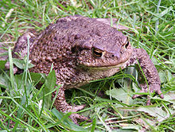

The common toad, European toad, or in Anglophone parts of Europe, simply the toad (Bufo bufo, from Latin
bufo
"toad"), is a frog found throughout most of Europe (with the exception of Ireland, Iceland, and some
Mediterranean islands), in the western part of North Asia, and in a small portion of Northwest Africa. It is
one
of a group of closely related animals that are descended from a common ancestral line of toads and which
form a
species complex. The toad is an inconspicuous animal as it usually lies hidden during the day. It becomes
active
at dusk and spends the night hunting for the invertebrates on which it feeds. It moves with a slow, ungainly
walk or short jumps, and has greyish-brown skin covered with wart-like lumps.
